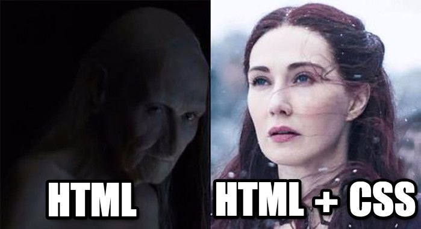

Домашка №2
Про мене
Всім привіт! Мене звати Тетяна. І мені 35 років. Я проживаю в містечку Новогродівка Донецької області. Людина я різностороння. За освітою - менеджер. Працювала секретарем суду. А зараз обожнюю йогу, в'яжу іграшки та вивчаю верстку.
Попереднє місце роботи
12 років працювала в місцевому суді, але завдяки нашим ганебним пришалепкуватим сусідам залишилась без роботи.
Навички та компетенції
-
Універсальні компетенції
- Комунікабельність
- Вміння працювати в команді
- Високий рівень тайм-менеджменту
- Вирішення проблем
-
Технічні Навички
- Знання HTML та CSS
- Навички роботи з SCSS
Причини, чому я тут
Мій чоловік-військовослужбовець захоплюється версткою та зацікавив мене цим неймовірним процесом.

В Yotube я натрапила на безкоштовний курс Фрілансер по життю. Офігела від подачі матеріалу. Зірки зійшлися. Тому тепер я частина великої родини майбутніх успішних верстальників.